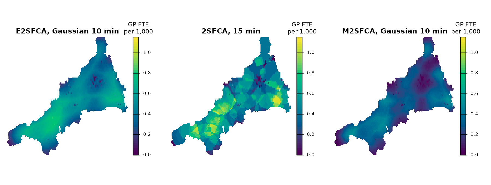
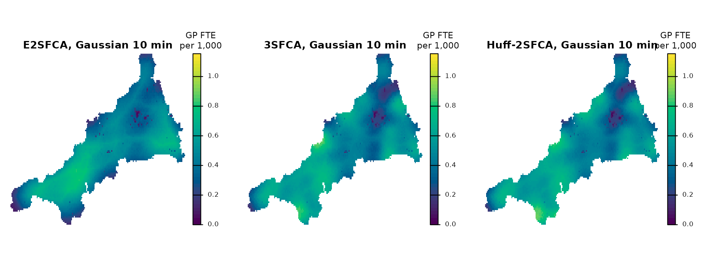

This guide uses the bundled Cornwall GP data, described in The Cornwall GP example data.
Floating catchment area (FCA) methods combine demand, facility supply and travel weights into an accessibility index. They differ in how they weight travel. This guide computes three of them on the same inputs and compares the results: the enhanced two-step FCA (E2SFCA) from Getting started, the original 2SFCA and the modified 2SFCA (M2SFCA). A last section adds two variants that first share each cell’s demand among practices, 3SFCA and Huff-2SFCA. For a fitted allocation model with an outside option, see Choosing an FCA index or an allocation model.
The inputs
The inputs are those of Getting started: the WorldPop 2020 population grid (estimated residents per cell of about 1 km, a count rather than a density), GP FTE excluding GPs in training, and travel minutes to each mainland practice. The grid and the workforce come from different sources and dates (2020 and 2026).
# Residents per grid cell, and travel minutes with one layer per practice
pop <- read_spax_example("cornwall_pop.tif")
travel <- read_spax_example("cornwall_gp_travel.tif")
# Mainland only: the Isles of Scilly have no road link to the mainland
gp <- cornwall_gp |>
filter(!scilly) |>
st_drop_geometry()
travel <- travel[[gp$practice]]
# Keep cells with a travel time to every mainland practice, then drop the
# empty margin the islands leave behind
pop <- trim(mask(pop, sum(travel)))
travel <- crop(travel, pop)
# Layers must line up with the practice table and the population grid
stopifnot(
identical(names(travel), gp$practice),
compareGeom(pop, travel)
)
c(
cells = sum(!is.na(values(pop))),
practices = nrow(gp),
residents = round(global(pop, "sum", na.rm = TRUE)[[1]]),
gp_fte = round(sum(gp$gp_fte_extg), 1)
) cells practices residents gp_fte
6912.0 54.0 541184.0 311.3 Preparing your own data explains these steps in detail.
Three ways to weight travel
Each method gathers demand to practices with one set of weights, divides each practice’s supply by the demand it gathered, and spreads those ratios back to cells with a second set of weights.
| Method | Weights when gathering demand | Weights when spreading ratios |
|---|---|---|
| 2SFCA | 1 within 15 minutes, 0 beyond | The same |
| E2SFCA | Gaussian decay, scale 10 minutes | The same |
| M2SFCA | Gaussian decay, scale 10 minutes | The Gaussian weight squared |
The 15-minute threshold and the 10-minute scale are choices for this
guide, not estimates. With the Gaussian scale of 10 minutes, a practice
10 minutes away keeps about 61% of its weight and one 20 minutes away
about 14%. demand_normalize = "identity" uses the weights
unchanged when practices gather demand, as in the original E2SFCA.
twosfca <- spax_2sfca(
demand = pop,
supply = gp,
distance = travel,
threshold = 15, # minutes
id_col = "practice",
supply_cols = "gp_fte_extg"
)
e2sfca <- spax_e2sfca(
demand = pop,
supply = gp,
distance = travel,
decay_params = list(method = "gaussian", sigma = 10),
demand_normalize = "identity",
id_col = "practice", # matches supply rows to travel layers
supply_cols = "gp_fte_extg"
)
m2sfca <- spax_m2sfca(
demand = pop,
supply = gp,
distance = travel,
decay_params = list(method = "gaussian", sigma = 10),
demand_normalize = "identity",
id_col = "practice",
supply_cols = "gp_fte_extg"
)Each result is a spax object whose
accessibility member is a raster of GP FTE per resident.
The maps show all three in GP FTE per 1,000 residents on one colour
scale.
# Stack the three surfaces and draw them on one shared colour scale
all_three <- 1000 * c(
e2sfca$accessibility,
twosfca$accessibility,
m2sfca$accessibility
)
names(all_three) <- c(
"E2SFCA, Gaussian 10 min",
"2SFCA, 15 min",
"M2SFCA, Gaussian 10 min"
)
shared_range <- range(values(all_three), na.rm = TRUE)
plot(
all_three,
nc = 3,
axes = FALSE,
col = hcl.colors(50, "viridis"),
range = shared_range,
mar = c(1, 1, 2, 5),
plg = list(title = "GP FTE\nper 1,000")
)
Compare the values
# Cell values as plain vectors, per 1,000 residents, and residents per cell
per_1000 <- function(x) 1000 * values(x$accessibility, mat = FALSE)
a <- per_1000(e2sfca)
b <- per_1000(twosfca)
m <- per_1000(m2sfca)
p <- values(pop, mat = FALSE)
# Cell quantiles and the index of the average resident
describe <- function(x) {
c(
quantile(x, c(0.05, 0.5, 0.95), na.rm = TRUE),
resident_weighted = weighted.mean(x, p, na.rm = TRUE)
)
}
round(
rbind(
E2SFCA = describe(a),
`2SFCA` = describe(b),
M2SFCA = describe(m)
),
2
) 5% 50% 95% resident_weighted
E2SFCA 0.24 0.49 0.73 0.58
2SFCA 0.24 0.50 0.88 0.58
M2SFCA 0.08 0.28 0.45 0.35
# Total supply per 1,000 residents, for comparison
round(1000 * sum(gp$gp_fte_extg) / sum(p, na.rm = TRUE), 2)[1] 0.58
# An index of zero in 2SFCA means no practice within 15 minutes
c(
residents_beyond_15_min = round(sum(p[b == 0], na.rm = TRUE)),
correlation_2sfca = round(cor(a, b, use = "complete.obs"), 2),
correlation_m2sfca = round(cor(a, m, use = "complete.obs"), 2)
)residents_beyond_15_min correlation_2sfca correlation_m2sfca
720.00 0.79 0.90 The quantiles describe grid cells, and most cells are rural. Weighting by residents answers a different question: the index the average resident sees. For E2SFCA and 2SFCA that average equals total GP FTE per 1,000 residents, because each uses the same weights in both steps and every practice gathers some demand. These indices redistribute the supply; they do not create or lose any. M2SFCA does not keep that total: its squared weights are smaller than the weights used to gather demand, so part of the supply is not spread back to anyone, and it discounts most strongly the cells whose practices are far away.
The three surfaces broadly agree on where access is higher: E2SFCA correlates at 0.79 with 2SFCA and at 0.9 with M2SFCA across cells. 2SFCA shows sharp steps at the 15-minute edges and a longer upper tail, and the 720 residents with no practice within 15 minutes get an index of zero. The decay versions change gradually instead. All three depend on choices, the threshold or the decay scale, that this guide does not estimate from data. The E2SFCA calculation step by step rebuilds the E2SFCA and M2SFCA surfaces from their parts.
The index has supply-per-demand units. It is not a share of people who use a practice, a waiting time or an observed rate of care.
Selection weights: 3SFCA and Huff-2SFCA
With the weights above, the weights of all practices at one cell need
not add up to 1, so where many practices are close each of them counts
the same residents. Two further variants first share each cell’s demand
among the practices. At each cell, the selection weight
G of a practice is its share of the cell’s weights, so the
shares at a cell add up to 1. Both steps then use the kernel
K = W * G in place of the decay weights W: a
practice gathers demand and spreads its ratio back to cells with the
same weights.
| Method | Selection weight G of a practice at a
cell |
Weights in both steps |
|---|---|---|
| 3SFCA | Its Gaussian weight, divided by the sum of these weights over the cell’s practices | W * G |
| Huff-2SFCA | Its Gaussian weight times its GP FTE, divided by the sum of these products over the cell’s practices | W * G |
Huff-2SFCA puts the attractiveness of a practice into the share. By
default the attractiveness is the supply measure, here GP FTE, raised to
the power alpha = 1. Both functions also use the Gaussian
decay for the selection weights, because selection_params
defaults to decay_params; they have no
demand_normalize argument, because the shares already
divide each cell’s demand. This differs from
demand_normalize = "standard" in
spax_e2sfca(), which divides the weights that gather demand
only.
sfca3 <- spax_3sfca(
demand = pop,
supply = gp,
distance = travel,
decay_params = list(method = "gaussian", sigma = 10),
id_col = "practice",
supply_cols = "gp_fte_extg"
)
huff <- spax_huff2sfca(
demand = pop,
supply = gp,
distance = travel,
decay_params = list(method = "gaussian", sigma = 10),
id_col = "practice",
supply_cols = "gp_fte_extg" # also the attractiveness
)3SFCA is the shared FCA calculation with a different kernel, so it
can be rebuilt from calc_decay(),
calc_choice() and compute_access(). The check
is silent when the selection weights add up to 1 at every cell and the
building blocks reproduce spax_3sfca().
w <- calc_decay(travel, method = "gaussian", sigma = 10) # decay weights W
g <- calc_choice(w) # selection weights G: each cell's weights over their sum
k <- w * g # the kernel of both steps
by_blocks <- compute_access(
demand = pop,
supply = gp,
demand_weights = k,
access_weights = k,
id_col = "practice",
supply_cols = "gp_fte_extg"
)
stopifnot(
isTRUE(all.equal(
range(values(sum(g), mat = FALSE), na.rm = TRUE),
c(1, 1)
)),
isTRUE(all.equal(
values(by_blocks, mat = FALSE),
values(sfca3$accessibility, mat = FALSE),
tolerance = 1e-10,
check.attributes = FALSE
))
)Each variant uses one kernel in both steps, as E2SFCA and 2SFCA do, so it returns the supply of every practice that gathers demand, here all of them: residents times index, summed over cells, equals the total GP FTE. The check shows that sum as a share of total GP FTE. M2SFCA squares the access-side weights and returns only part of it.
# Residents times index, summed over cells, as a share of total GP FTE
returned <- function(x) {
sum(p * values(x$accessibility, mat = FALSE), na.rm = TRUE) /
sum(gp$gp_fte_extg)
}
round(
c(
E2SFCA = returned(e2sfca),
`2SFCA` = returned(twosfca),
M2SFCA = returned(m2sfca),
`3SFCA` = returned(sfca3),
`Huff-2SFCA` = returned(huff)
),
6
) E2SFCA 2SFCA M2SFCA 3SFCA Huff-2SFCA
1.000000 1.000000 0.615978 1.000000 1.000000 The maps put E2SFCA, 3SFCA and Huff-2SFCA on the colour scale of the first map, in GP FTE per 1,000 residents.
# Same colour scale as the first map; the new surfaces lie within its range
selection_maps <- 1000 * c(
e2sfca$accessibility,
sfca3$accessibility,
huff$accessibility
)
names(selection_maps) <- c(
"E2SFCA, Gaussian 10 min",
"3SFCA, Gaussian 10 min",
"Huff-2SFCA, Gaussian 10 min"
)
stopifnot(
min(values(selection_maps), na.rm = TRUE) >= shared_range[1],
max(values(selection_maps), na.rm = TRUE) <= shared_range[2]
)
plot(
selection_maps,
nc = 3,
axes = FALSE,
col = hcl.colors(50, "viridis"),
range = shared_range,
mar = c(1, 1, 2, 5),
plg = list(title = "GP FTE\nper 1,000")
)
a3 <- per_1000(sfca3)
ah <- per_1000(huff)
# Cell quantiles and the resident-weighted index, as for the other methods
round(
rbind(
E2SFCA = describe(a),
`3SFCA` = describe(a3),
`Huff-2SFCA` = describe(ah)
),
2
) 5% 50% 95% resident_weighted
E2SFCA 0.24 0.49 0.73 0.58
3SFCA 0.25 0.51 0.70 0.58
Huff-2SFCA 0.25 0.52 0.72 0.58
# Agreement across cells
c(
correlation_e2sfca_3sfca = round(cor(a, a3, use = "complete.obs"), 2),
correlation_e2sfca_huff = round(cor(a, ah, use = "complete.obs"), 2),
correlation_3sfca_huff = round(cor(a3, ah, use = "complete.obs"), 2)
)correlation_e2sfca_3sfca correlation_e2sfca_huff correlation_3sfca_huff
0.64 0.55 0.97 The resident-weighted index is the same for the three, because each
returns the total supply. They differ in which cells the supply is
credited to: across cells E2SFCA correlates at 0.64 with 3SFCA, while
adding attractiveness to 3SFCA changes the surface less (a correlation
of 0.97). On the maps, 3SFCA and Huff-2SFCA are higher than E2SFCA at
the ends of the Lizard and Land’s End peninsulas, where E2SFCA is
lowest, and they are lowest on Bodmin Moor, where E2SFCA is also low.
With alpha = 0 attractiveness has no effect and Huff-2SFCA
equals 3SFCA.
no_attractiveness <- spax_huff2sfca(
demand = pop,
supply = gp,
distance = travel,
decay_params = list(method = "gaussian", sigma = 10),
alpha = 0,
id_col = "practice",
supply_cols = "gp_fte_extg"
)
stopifnot(isTRUE(all.equal(
values(no_attractiveness$accessibility, mat = FALSE),
values(sfca3$accessibility, mat = FALSE),
tolerance = 1e-10,
check.attributes = FALSE
)))As for the other methods, the index has supply-per-demand units, and
the decay scale, the attractiveness measure and alpha are
choices that this guide does not estimate from data.
?spax_3sfca and ?spax_huff2sfca describe
selection_params, which gives the selection weights another
decay or a catchment limit, and cite the methods.
Continue
- Preparing your own data: small-area counts to a demand grid, facility IDs and unknown travel times.
- The E2SFCA calculation step by step.
- Grid resolution, support and computational cost.
- Choosing an FCA index or an allocation model when expected use, an explicit outside option and a fit to observations are required.